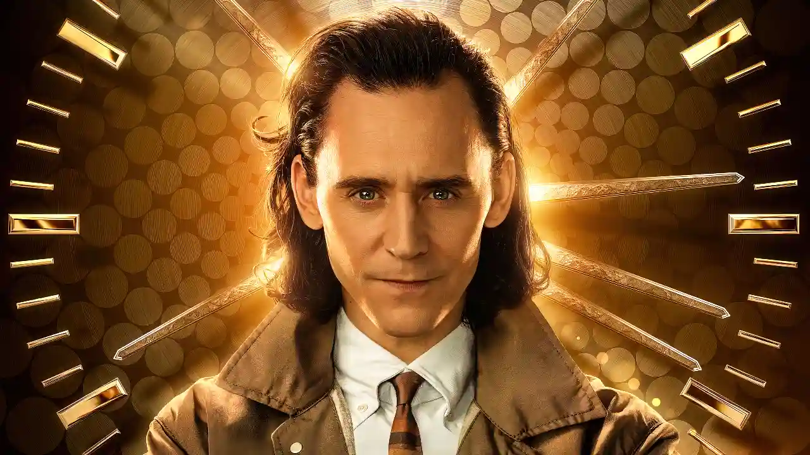
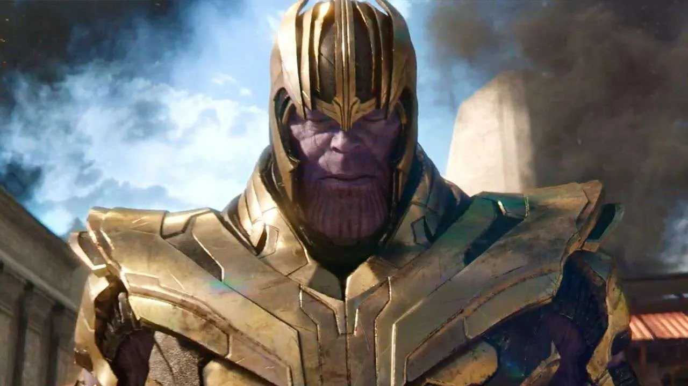
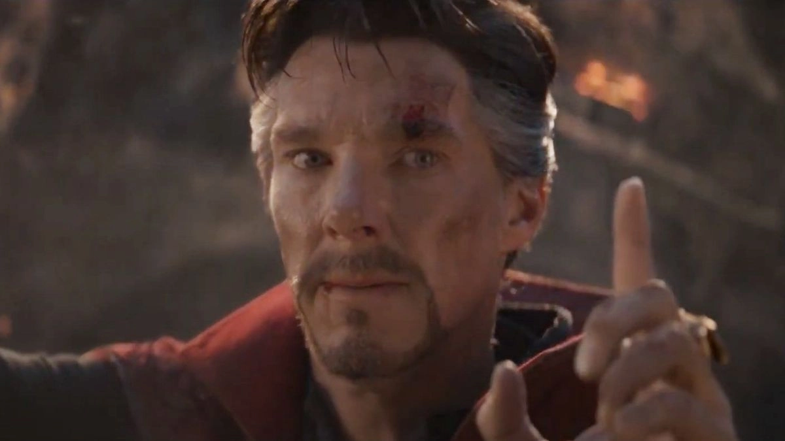
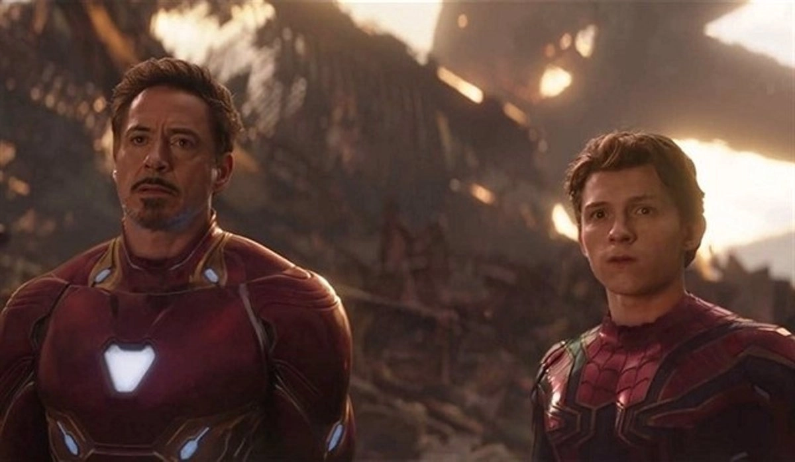
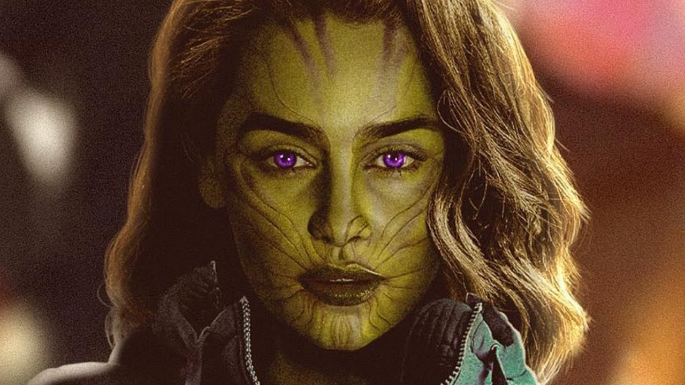

¿Loki es en realidad el héroe de la historia?
La primera teoría sostiene que Loki, el encantador y a menudo malentendido Dios de la Travesura, es en realidad el héroe en lugar del villano. ¿Cómo? Algunos fans sostienen que sus acciones, aunque caóticas, son en realidad intentos de unir a los Vengadores y hacer que estén preparados para las amenazas más grandes del universo. ¿Una interpretación astuta o simplemente amor por el personaje? Tú decides. Si bien es cierto que la serie de Loki nos confirmó que simplemente era “destino”, y que estaba todo preparado para que perdiera y otros se convirtieran en héroes, en cierto modo podría ser una teoría parcialmente acertada.


¿Thanos tenía razón?
Esta es una teoría controversial, pero algunos fans creen que Thanos, el Titán Loco, tenía una lógica detrás de su plan de eliminar a la mitad de la vida en el universo. Su objetivo era preservar los recursos y evitar la sobrepoblación. ¿Era su método extremo o una solución necesaria para un problema universal? Este debate sigue abierto, pero lo cierto es que, sobre todo en el mundo real, viendo cómo está la sociedad, que Thanos hiciera esto en nuestro mundo, podría ser necesario. Pero lo cierto es que, Thanos realmente tenía razón, aunque no se explicó bien en el MCU. Si nos vamos a Eternals, el chasquido de Thanos fue el culpable de que el surgimiento no se llevase a cabo, por lo que en parte, pese a lo drástico de su medida, salvó al planeta tierra y a otros planetas de la extinción.
¿Doctor Strange mintió acerca del futuro en el que ganan?
Todos recordamos la icónica escena en “Infinity War” donde Doctor Strange ve 14,000,605 futuros posibles y solo uno de ellos resulta en la victoria de los Vengadores. ¿Pero y si en realidad vio más de un final exitoso y eligió este específicamente para ciertos eventos futuros? Este giro nos hace reconsiderar todas las acciones de Doctor Strange. En Doctor Strange 2 ha quedado claro que el hechicero supremo es el culpable del fin del mundo en varias ocasiones, así que no sería nada atrevido intuir que Strange podría haber provocado problemas en el tejido multiversal antes de Spider-Man: No Way Home.


¿Peter Parker es en realidad un joven Tony Stark?
A pesar de su relación casi paternal en las películas, algunos fans especulan que Peter Parker es una versión más joven de Tony Stark debido a sus similitudes: ambos son genios, inventores y han sufrido pérdidas significativas. Aunque esta teoría es bastante descabellada, añade una nueva dimensión a su relación: ¿Podría el multiverso tener algo que ver? Posiblemente no.
¿Los Skrulls llevan infiltrados desde su llegada?
Después de “Captain Marvel”, sabemos que los Skrulls pueden tomar la apariencia de cualquier persona. ¿Qué pasaría si algunos de los personajes que hemos conocido a lo largo de las películas fueran en realidad Skrulls disfrazados? Esta teoría abre un abanico de posibilidades y cuestionamientos sobre la verdadera identidad de nuestros héroes. Lo cierto es que cualquiera podría ser un Skrull (Inserta aquí el meme de “Cómo sé que no eres un Skrull”), pero por suerte, esta teoría podrá conocerse en cuanto se estrene la serie Secret Invasion, adaptación del evento de cómics del mismo nombre, en donde los Skrull casi invaden la tierra.
